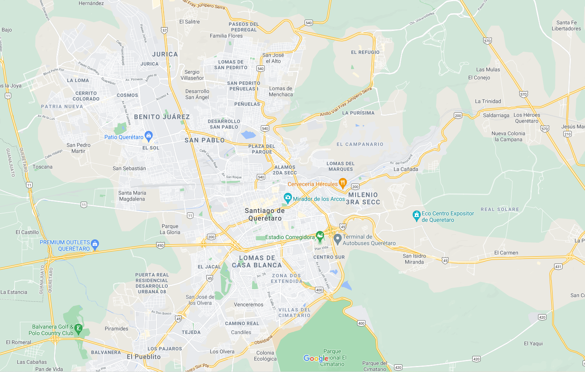

x


Hotel Bla Bla
x
Error!
No hay información sobre este hotel

Hotel Maria Bonita
Hotel CasaQuetzal
Hotel del Portal
Maria Isabel
Los Agaves
Pila Seca 11
Hotel Casa Luna
Hotel Casa Liza
Hotel Casa 88